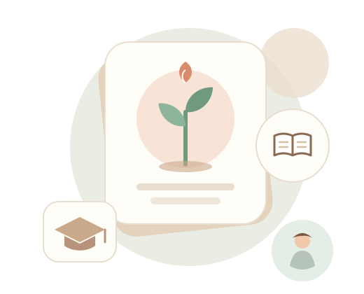
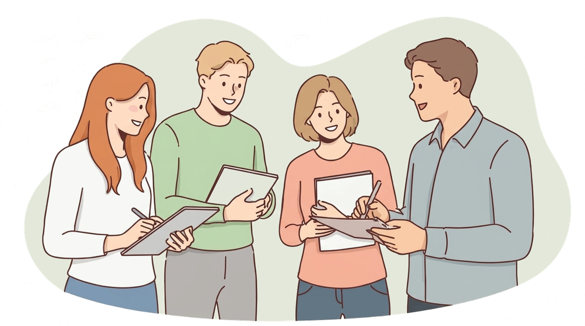
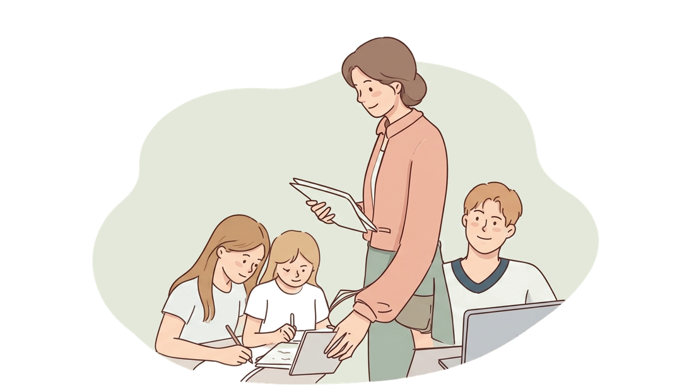

Ресурс поруч:
кейс психологічної підтримки викладача і студента
Піклуймось про ментальне здоров’я разом!
Дізнатися більше
Заклад освіти — це не лише про знання, а й передусім про людину.
У стінах ВСП «Технолого-економічний фаховий коледж Білоцерківського НАУ» ми переконані: ментальне здоров’я є фундаментом успішного навчання, професійної реалізації та гармонійного життя. Воно безпосередньо впливає на нашу здатність концентруватися, засвоювати нову інформацію, долати труднощі та будувати екологічні стосунки в колективі.
Цей вебресурс створено як практичний навігатор, де кожен учасник освітнього процесу знайде дієві інструменти для відновлення внутрішньої рівноваги та життєстійкості.
Чому це важливо саме зараз? (Актуальність)
Сучасні виклики вимагають від освітян і молоді постійної адаптації, високої емоційної стійкості та вміння швидко відновлюватися в умовах хронічного стресу та невизначеності. Професійне вигорання педагогів і навчальне перевантаження студентів знижують продуктивність та виснажують особистісні резерви.


Щоб не опинитися у «глухому куті» та вчасно поповнювати власні сили, недостатньо лише знати про існування стресу — необхідно мати під рукою перевірений набір практичних дій. Поєднання класичної психології та сучасних діджитал-інструментів дозволяє зробити турботу про себе доступною, швидкою та інтегрованою у щоденну рутину кожного.
Як працює цей кейс?
В основу вебресурсу покладено ресурсозберігаючу модель BASIC Ph — своєрідний «міст над прірвою», який допомагає з’єднати внутрішнє «Я» людини із зовнішнім світом та вийти з кризової ситуації. Кожна людина має 6 каналів подолання стресу, де одні канали є провідними, а інші потребують активації.
На сторінках цього ресурсу ви знайдете:
-
Діагностика
можливість визначити власні провідні та приховані канали стресодолання.
Перейти -
Практичний інструментарій
структуровані за шістьма напрямами вправи, техніки саморегуляції, рекомендації та корисні діджитал-додатки (трекери звичок, планери, плейлисти, віртуальні екскурсії тощо).
Дослідити -
Готові рішення
добірку дієвих порад, які допоможуть вчасно підтримати себе, колегу чи студента у складну хвилину.
Переглянути
Обирайте свій канал ресурсу, досліджуйте власні сильні сторони та пам’ятайте: підтримка завжди поруч!
Розпочати